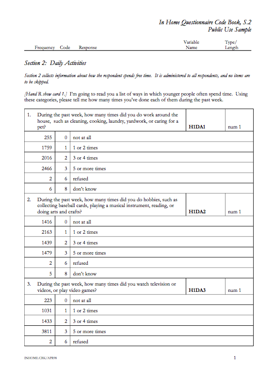

CSC 595 - Project Presentation
Caroline Cao, Brandon Markwalder, David Scroggins
- Tracked American adolescents grades 7- 12 from 1994 to 2008
- Quality Education Database: 26,666 U.S. High Schools.
- Most the data set was produced via a sequence of in-home surveys
- Sense of scale: Wave 1 Data set has 2,794 columns/variables, 6,281 rows/instances, 17,549,114 unique data points
- Date of birth, racial and ethnic background, intimate partner status, school status, daily activities, general health,
access to health services, parental relationships, pregnancy history, relations with siblings etc.
- Each wave has accompanying contextual database and Wave 4 has accompanying biomarkers for Diabetes, risk for
heart disease etc.
Our approach
- Conceptually: Develop prototype for exploration of dataset
- Take the Shneiderman mantra seriously: interface should ease you into the data set but also enable analysis
- Focus on health themes (do not attempt to render the entire dataset)
Some challenges
- Data encoding is abstract

- No existing key to question mapping provided
- Option 1: PDF Parsing
- Option 2: Build by hand
General visualization approach
- Hierarchical vis for Overview
- Parallel Coordinates for comparison of question responses
- Scatter plot matrix with brushing and zoom capabilities for finer grain analysis
Click to Enter Visualization